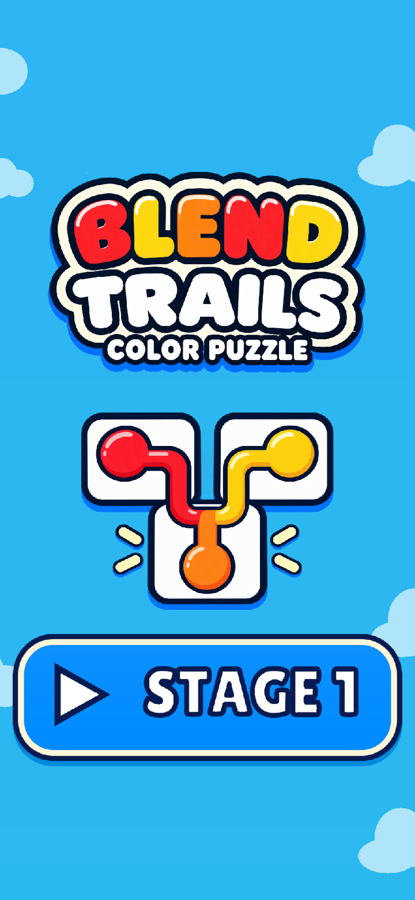
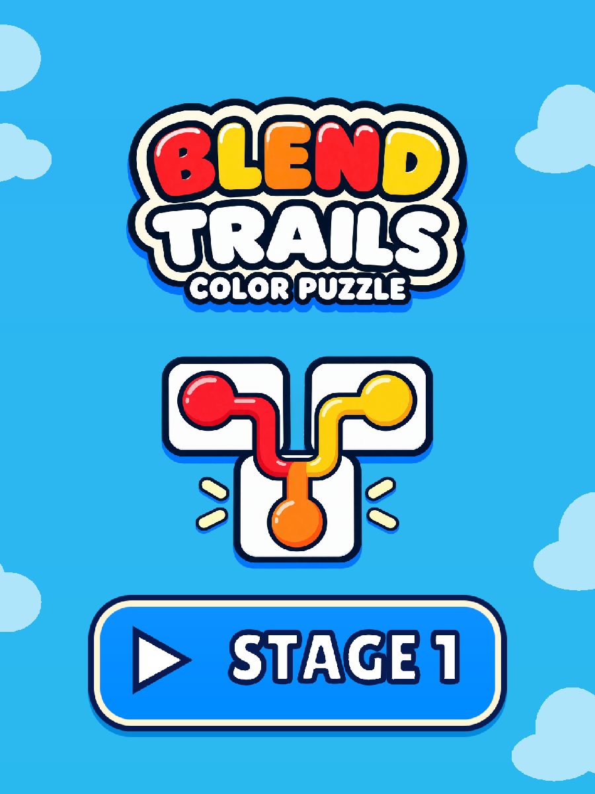
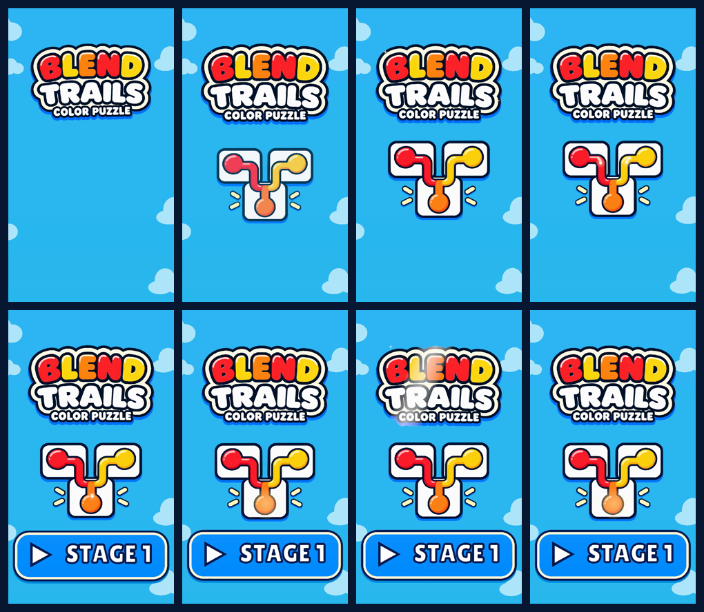

BLEND TRAILS: COLOR PUZZLE
タイトル画面 アニメーション実装
ロゴの登場、混色ラインの光、開始ボタンのバウンス、ゆったりした待機ループをUnityへ実装しました。
採用した動画案
開始ボタンは約2.6秒で操作可能になります。保存されたステージ番号を表示し、そのステージへ進みます。
画面比率の確認
縦長の画面


タブレットの比率


実画面のコマ送り

ロゴの登場、混色ラインの光、開始ボタンのバウンス、ゆったりした待機ループをUnityへ実装しました。
開始ボタンは約2.6秒で操作可能になります。保存されたステージ番号を表示し、そのステージへ進みます。


